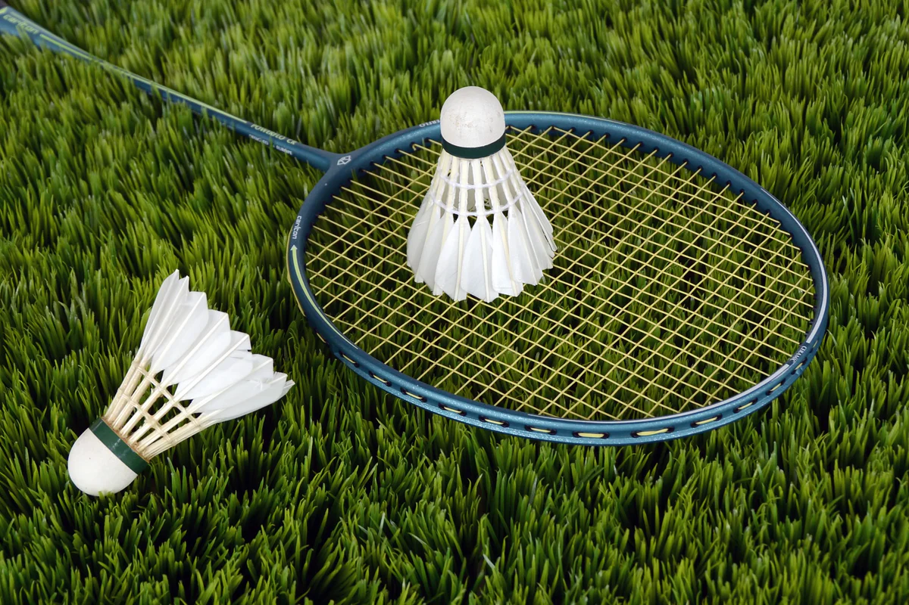

An Informational Guide for Everything You Need to Know About Badminton.
Click me to display your location...
Badminton is an indoor raquet sport played by either two opposing players or two teams of doubles. Each player has a wired racket and try to hit a shuttle over a seperation net to gain points. To win, a player or team must secure over half of the number of games, by reaching the number of points set for the individual game. In professional games, a player or team needs to secure 2 out of 3 games by reaching 21 with a 2 point lead. If that is not achieved than the first player to 30 points wins the round, and if it is the second won game then the entire game. //www.britannica.com/sports/badminton 
Badminton is derived directly from the game “poona,” which was played by British army officers stationed in India in the 1860s. The Bath Badminton Club was established in Bath, England, in 1877 and introduced new rules to the game. The formation of the Badminton Association of England (BAE) in 1893 marked a significant step in standardizing the rules and regulations of the sport. The first All England Open Badminton Championships, considered the world’s first badminton tournament, were held in 1899. These developments laid the foundation for badminton’s global expansion. //www.britannica.com/sports/badminton